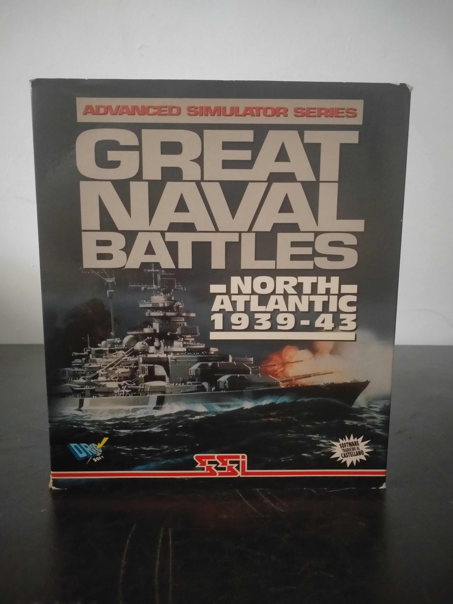

Ficha #000000
Great Naval Battles: North Atlantic 1939-43
Great Naval Battles: North Atlantic 1939-43 es un simulador de combate naval y wargame publicado en 1992, primera entrega de la serie Great Naval Battles. Permite dirigir fuerzas británicas o alemanas durante la campaña del Atlántico Norte en la Segunda Guerra Mundial mediante campañas completas, minicampañas y enfrentamientos individuales. Combina acción en tiempo real con tres escalas de mando —capitán, flota y almirante—, control directo de acorazados y cruceros, navegación, artillería, dirección de tiro, evaluación de daños por cubiertas, una base de datos histórica de buques y repetición de las batallas. Esta edición española en disquetes, editada y distribuida por Dro Soft para compatibles IBM PC, documenta la etapa de los simuladores militares complejos de Strategic Simulations y la localización al castellano del software especializado de comienzos de los noventa. ([MobyGames][1])
- Formato
- Big Box
- Plataforma
- MsDos
- Género
- Simulación naval Wargame Estrategia en tiempo real Simulación histórica
- Serie
- Todos Big Box
- Desarrollador
- IO Design Group Inc.
- Distribuidor
- Strategic Simulations, Inc., Dro Soft
- EAN
- —
Contenido de la edición
- Caja de cartón Big Box
- Manual de usuario en castellano
- 3 disquetes de 3,5 pulgadas HD
- Hoja de fe de erratas
Preservación
- Protección
- Manual lookup
- Formato recomendado
- Otro
- Jugable en virtualización
- Sí
Preservar los tres disquetes mediante imágenes individuales de bajo nivel o formato IMG/RAW, verificar sectores y documentar su orden. Debe digitalizarse también el manual en castellano, ya que el programa incorpora una comprobación anticopia basada en documentación física. La ejecución virtual es viable mediante DOSBox conservando accesible la información requerida por la protección. ([MobyGames][2])